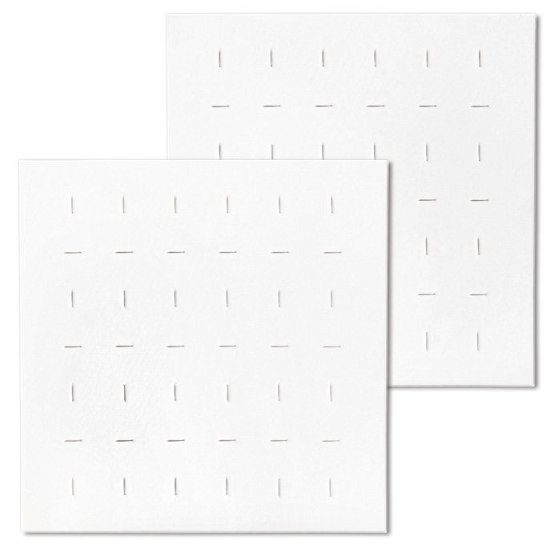
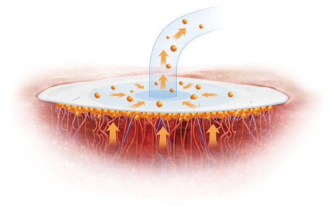
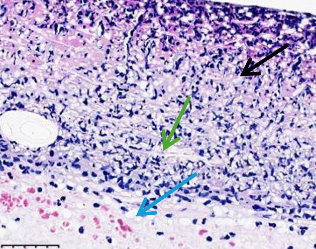
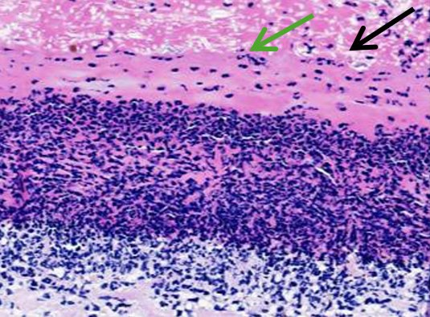
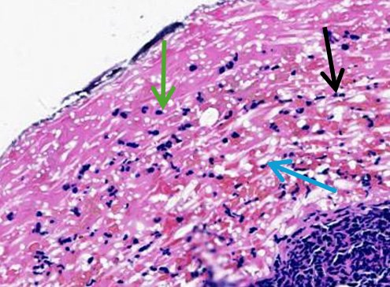
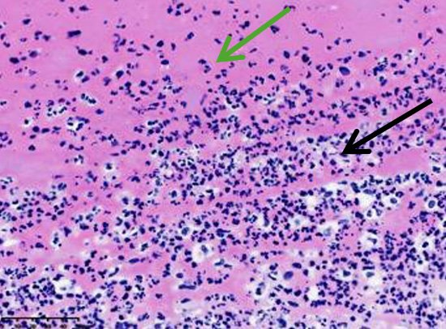
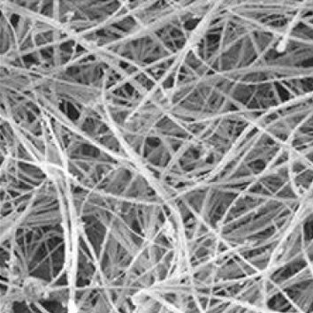
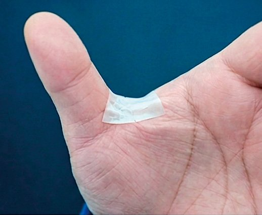
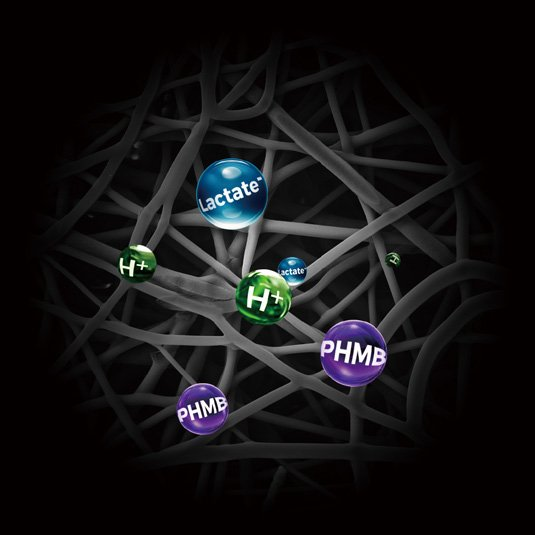

Kreate Medical
SurCura™ Wound Matrix
A fully synthetic, absorbable, electrospun wound matrix that is soft and conformable.

How it works
From placement to absorption
Per Kreate: applied after debridement, it degrades into lactate-rich byproducts and fully absorbs in approximately 7 to 14 days.



Schematics from Kreate Medical Antibacterial sell sheet. Manufacturer-approved for internal Resource Hub use.
Preclinical timeline
Swipe to see each stage →

Cell adhesion and infiltration

Initial incorporation

Neovascularization

Granular tissue formation and device degradation
Preclinical rodent model, full-thickness defects (Kreate data on file). Green arrows: newly formed ECM tissue. Blue: new blood vessels. Black: SurCura fibers.
Case study
Manufacturer case report
Refractory Stage 3 sacral pressure injury
SurCura Antibacterial Wound Matrix. Single case.
Manufacturer case imagery (Kreate Medical sell sheet). Manufacturer-approved for internal Resource Hub use.
Explore full caseBaseline, Day 5 findings, comorbidities
Day 0, before treatment
- Non-viable wound bed; thick, adherent slough covering more than 70% of wound bed
- Wound margins edematous, irregular, with signs of undermining
- Wound stalled in chronic inflammatory phase despite two NPWT episodes over 10 days, not suitable for skin grafting
Day 5, single application
- Necrotic tissue dissolved and largely cleared; robust, well-vascularized granulation tissue proliferating across wound bed
- Active epithelial migration from wound margins; wound area visibly contracted with cleaner, well-defined edges
- Wound phase transitioned from stagnation to active proliferative repair, graft-ready
Comorbidities: severe malnutrition, severe pneumonia, left femoral neck fracture, moderate anemia, lower extremity DVT, prolonged immobilization, tracheostomy.
Source: Kreate Medical Antibacterial sell sheet (KM-MKT-20260001bEN), ref 23, "data on file, clinical case study and clinical compendium." Full case report not on file. Single case; not evidence of typical results.
Published pilot study: Qian 2026Prospective single-arm pilot, n=15. Device identity to confirm.
Single-arm pilot (low evidence level)
- Single site, single arm; 15 chronic lower extremity wounds (5 DFU, 8 VLU, 2 PU) refractory to standard care
- Weekly application for 4 weeks
- Mean wound area reduction 83.6% at 4 weeks
- 7 of 15 healed, mean time about 13.9 days
- No adverse events reported; no control group
Qian L, et al. Int Wound J. 2026;23(4):e70908. Open access (PMC13062494).
Details
Product information
What it isSynthetic electrospun matrix resembling native ECM

SEM image, Kreate Medical sell sheet. Manufacturer-approved for internal Resource Hub use.
- 100% synthetic, absorbable, electrospun fiber matrix resembling native ECM
- Soft and conformable; adheres to the contour of the wound bed
- Easy placement and manipulation whether wet or dry
- Pre-fenestrated, highly hydrophilic for fluid management and enhanced NPWT compatibility

Product image, Kreate Medical sell sheet. Manufacturer-approved for internal Resource Hub use.
MechanismScaffold, MMP-stable, lactate-rich degradation
- Demonstrated scaffolding effect for fibroblast adhesion, infiltration and proliferation (in vitro)
- MMPs-stable, enabling immediate application following debridement
- Lactate-rich, pH-lowering degradants to stimulate granular tissue formation and neovascularization
- Programmed degradation in sync with physiological healing; fully absorbs in approximately 7 to 14 days
As stated by Kreate Medical; supporting studies are Kreate data on file.
IndicationsPartial and full thickness wounds, single use
SurCura Wound Matrix: sterile, single-use device for partial and full thickness wounds, including pressure sores/ulcers, venous ulcers, diabetic ulcers, chronic vascular ulcers, tunneled/undermined wounds, surgical wounds, trauma wounds and draining wounds. Single application, may be reapplied every 7 to 14 days.
SurCura Antibacterial: same, with surgical wounds (donor sites/grafts, post-Mohs surgery, post-laser surgery, podiatric, wound dehiscence) and trauma wounds (abrasions, lacerations, partial-thickness burns, skin tears).
Contraindications and warningsReview before use. Differs by product.
SurCura Wound Matrix
- NOT indicated for patients with known sensitivity to resorbable suture materials
- NOT indicated for children under 21 or pregnant or breastfeeding women
SurCura Antibacterial Wound Matrix
- NOT indicated for third degree burns
- Not studied in wounds that extend into tendon, muscle, joint capsule or bone
- NOT indicated for known sensitivity to resorbable suture materials or to PHMB
- Not studied in children under 18 or pregnant or breastfeeding women
- Do not apply until excessive exudate, bleeding, significant swelling and acute infection are controlled
- No more than 75 cm² concurrent exposure per patient, per day
Consult the manufacturer IFU (not yet on file).
Sizes and SKUsDisc and three sheet sizes
| Size | SurCura | Antibacterial | cm² |
|---|---|---|---|
| 14 mm disc | SCWM-55D | SCAB-55D | 1.54 |
| 2.5 x 2.5 cm | SCWM-0101 | SCAB-0101 | 6.25 |
| 5 x 5 cm | SCWM-0202 | SCAB-0202 | 25 |
| 5 x 7.5 cm | SCWM-0203 | SCAB-0203 | 37.5 |
Storage and shelf life not stated in available materials.
Antibacterial (PHMB) factsIn vitro data. No clinical benefit demonstrated.

Schematic, Kreate Medical sell sheet. Manufacturer-approved for internal Resource Hub use.
- Local, sustained PHMB (polyhexamethylene biguanide) elution; therapeutic level within 1 hour, sustained up to 7 days
- Based on in vitro testing, PHMB reduces the growth of bacteria within the wound matrix for up to 7 days
- Broad-spectrum 99.99% bactericidal efficacy (in vitro)
- May help control biofilm reformation after debridement
- High tissue compatibility and no known acquired bacterial resistance, as compared to ionic and metallic silver (per Kreate)
Two versionsWound Matrix and Antibacterial share sizes
SCWM SKUs. Core synthetic matrix.
SCAB SKUs. Same matrix with PHMB.
Source documentsManufacturer materials used for this page
- SurCura Sell Sheet (KM-MKT-20260009aEN)
- SurCura Antibacterial Sell Sheet (KM-MKT-20260001bEN)
- Cited study: L. Qian et al., Clinical Evaluation of a Novel Synthetic Nanofiber Wound Matrix for the Treatment of Chronic Wounds, Int Wound J 23(4) 2026: e70908 (full text reviewed; see evidence card)
- Kreate Medical Inc., Alpharetta, GA. 1-866-432-5425. kreatemed.com
Claims check (internal)Flags from source verification
- All statements above are drawn from Kreate sell sheets. No Sheridan efficacy claims.
- PHMB 99.99%, 7-day elution: in vitro only.
- Timeline: preclinical rodent model only.
- Case: single manufacturer case; full report (ref 23) not on file.
- Mechanism and scaffold claims: Kreate data on file, not independently reviewed.
- Excluded: "world's first and only" (internal market research), "Accelerated Healing" headline, comparison icons vs ECM/xenograft/foam, any healing rates or pricing.
- Age wording differs by product (21 vs 18); quoted per sheet.
- IFU not on file: storage, shelf life and application steps unverified.
- All images: Kreate copyright, web reuse not yet approved.
Contact
Talk with Sheridan
Text Abiad to set up a visit, discuss a patient, or schedule an in-service.
Please do not include patient information in text messages.